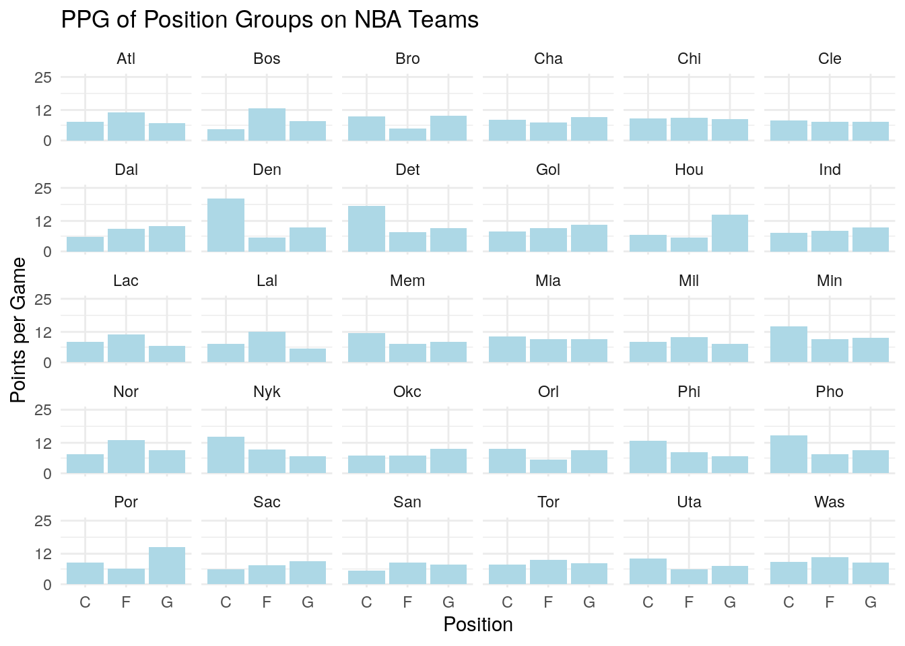
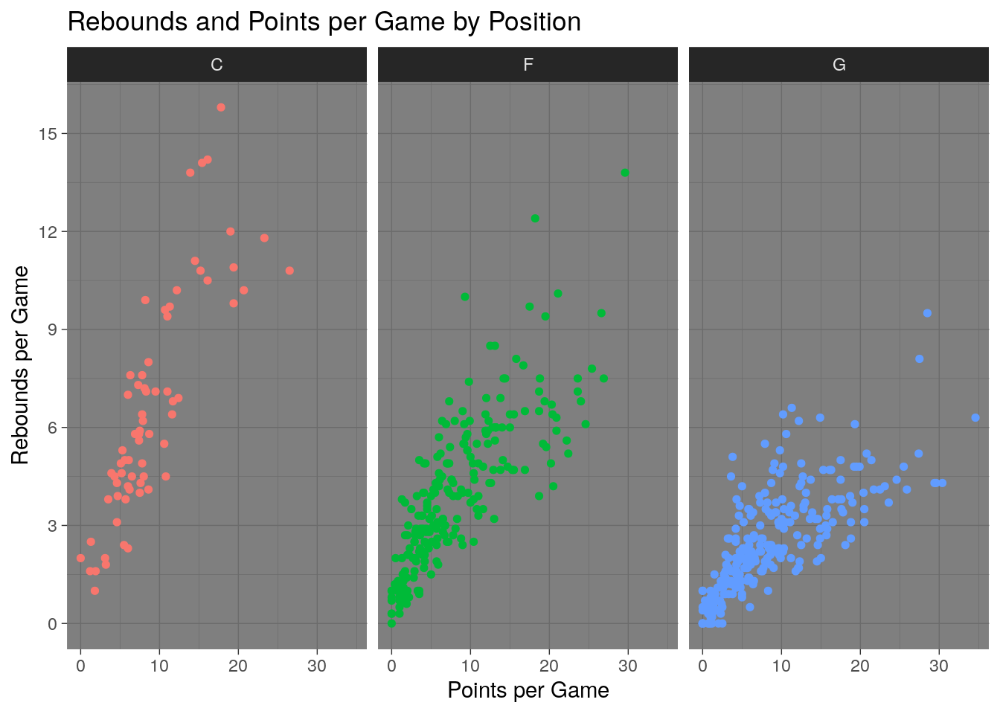
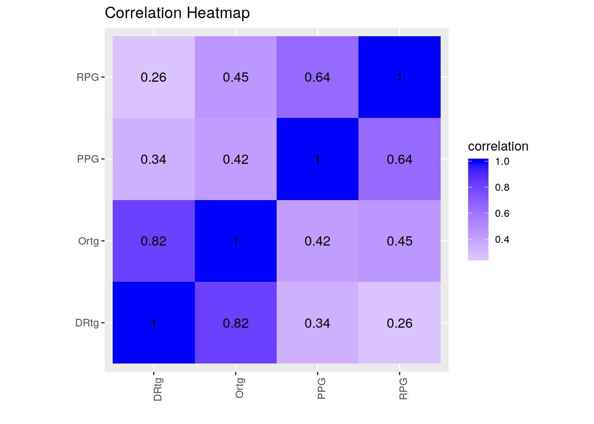
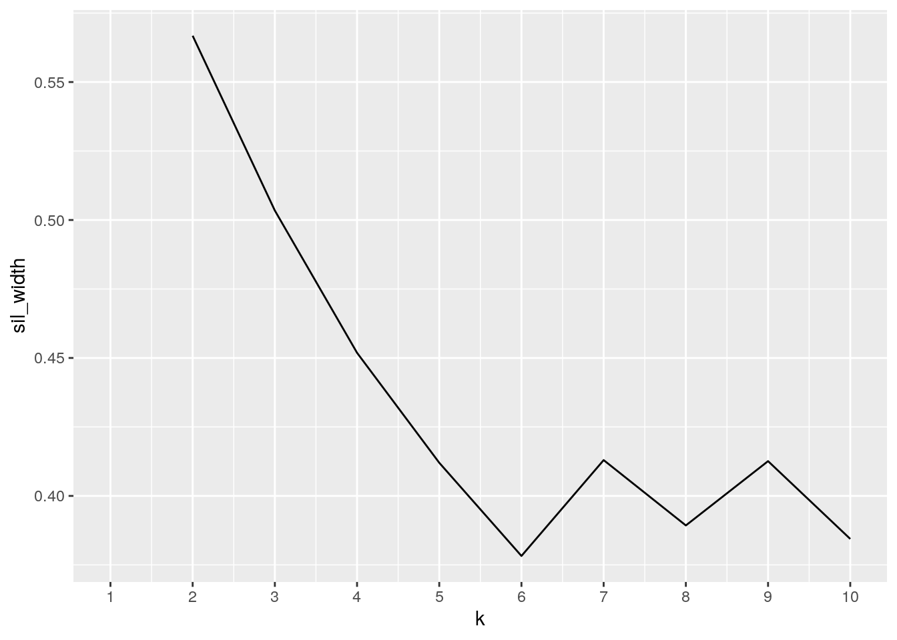
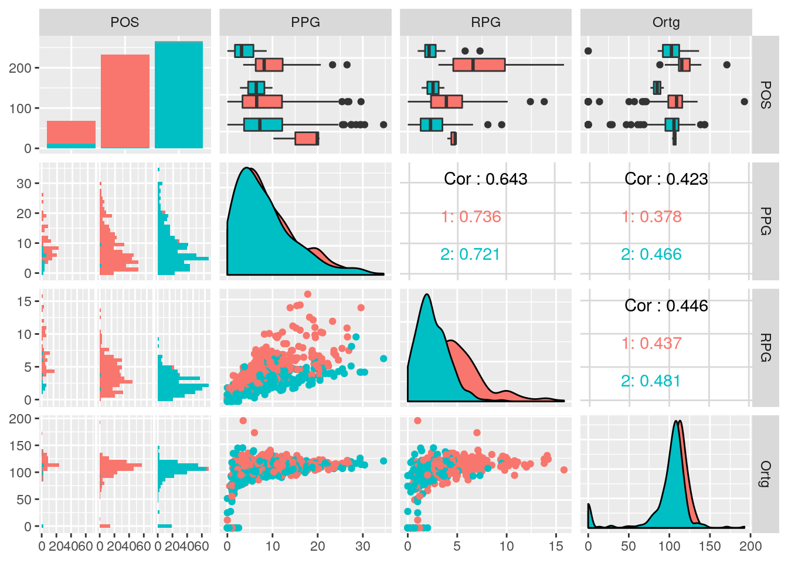

The two datasets chosen for this project contain statstics for individual players in the National Basketball Association (NBA) for the current 2019-2020 NBA season. The datasets are from NBAstuffer.com and are updated everyday on this website. These datasets were received on March 6th, 2020, so the stats have been recorded from the beginning of the NBA season to March 6th. One dataset, “NBAstats”, has the general stats for the players such as, points per game and rebounds per game. The other dataset, “NBAadvancedstats”, has advanced statistics on players such as, offensive and defensive rating. Both of the datasets contain columns for player name, team they play on, and the player’s specifice position. Combining these datasets can allow us to see the impact of a players general stat on certain advanced stats. For example, a higher points per game could lead to a higher offensive rating or players. These datasets are interesting because it gives us an opporitunity to take a deep dive into these individual player stats and get a feeling for some of these player’s impact on the game.
library(tidyverse)
NBAstats <- read.csv("NBAstats.csv")
NBAadvancedstats <- read.csv("NBAadvancedstats.csv")
NBAstats <- as.data.frame(NBAstats)
NBAadvancedstats <- as.data.frame(NBAadvancedstats)
glimpse(NBAstats)## Observations: 569
## Variables: 5
## $ FULL.NAME <fct> Steven Adams, Bam Adebayo, LaMarcus Aldridge, Nickeil Alexa…
## $ TEAM <fct> Okc, Mia, San, Nor, Mem, Bro, Nyk, Orl, Bro, Mem, Hou, Mil,…
## $ POS <fct> C, C, F, G, G, C, G, F, F, F, F, F, F, F, F, F, G, F, F, G,…
## $ PPG <dbl> 11.0, 16.1, 18.8, 5.1, 7.4, 10.7, 5.0, 4.3, 1.0, 5.6, 2.5, …
## $ RPG <dbl> 9.4, 10.5, 7.5, 2.0, 2.2, 9.6, 0.9, 4.9, 0.7, 4.3, 3.5, 13.…glimpse(NBAadvancedstats)## Observations: 569
## Variables: 5
## $ FULL.NAME <fct> Steven Adams, Bam Adebayo, LaMarcus Aldridge, Nickeil Alexa…
## $ TEAM <fct> Okc, Mia, San, Nor, Mem, Bro, Nyk, Orl, Bro, Mem, Hou, Mil,…
## $ POS <fct> C, C, F, G, G, C, G, F, F, F, F, F, F, F, F, F, G, F, F, G,…
## $ Ortg <dbl> 122.6, 117.4, 115.2, 90.7, 110.9, 128.7, 105.7, 87.8, 50.3,…
## $ DRtg <dbl> 102.2, 102.5, 108.9, 107.0, 109.0, 100.1, 111.8, 103.2, 101…This chunk of R shows the two datasets being added to R via a csv file. Finally, a glimpse of each dataset was ran to show a sense of what the data is on each dataset.
Stats <- NBAstats %>% full_join(NBAadvancedstats)
Stats <- Stats %>% na.omit()
glimpse(Stats)## Observations: 567
## Variables: 7
## $ FULL.NAME <fct> Steven Adams, Bam Adebayo, LaMarcus Aldridge, Nickeil Alexa…
## $ TEAM <fct> Okc, Mia, San, Nor, Mem, Bro, Nyk, Orl, Bro, Mem, Hou, Mil,…
## $ POS <fct> C, C, F, G, G, C, G, F, F, F, F, F, F, F, F, F, G, F, F, G,…
## $ PPG <dbl> 11.0, 16.1, 18.8, 5.1, 7.4, 10.7, 5.0, 4.3, 1.0, 5.6, 2.5, …
## $ RPG <dbl> 9.4, 10.5, 7.5, 2.0, 2.2, 9.6, 0.9, 4.9, 0.7, 4.3, 3.5, 13.…
## $ Ortg <dbl> 122.6, 117.4, 115.2, 90.7, 110.9, 128.7, 105.7, 87.8, 50.3,…
## $ DRtg <dbl> 102.2, 102.5, 108.9, 107.0, 109.0, 100.1, 111.8, 103.2, 101…I used the “full_join” function to join these two datasets because the “FULL.NAME”, “POS”, and “TEAM” variables were the same on both datasets which meant that each column had a match for both datasets. The full join function enabled the two datasets to combine with each unnique variable and their subsequent data. Using this function, the new “Stats” dataset has a total of 7 columns which includes the 3 columns the two datasets have in common, the 2 unique columns from the “NBAstats” dataset, and the 2 unique columns from the “NBAadvancedstats” dataset. “Stats” has the following varibale: Full Name, Team, Position, Points per Game, Rebounds per Game, Offensive Rating, and Defensive Rating. I also omitted any NA’s from the dataset which appeared for players who haven’t logged enough stats to get an offensive or defensive rating.
I found various summary statistics for the combined dataset to show a better overall picture of the data presented in the dataset.
Stats %>% summarize(n_distinct(POS), n_distinct(TEAM))## n_distinct(POS) n_distinct(TEAM)
## 1 3 30The n_distinct results show that there are 3 different positions and 30 different teams in the dataset. This goes along with common knowledge because there are 30 teams in the NBA and 3 general positions usually documented. The 3 positions are center (C), forward (F), and guard (G).
Stats %>% mutate(PPGandRPG = PPG+RPG) %>% group_by(POS) %>%
summarize(mean = mean(PPGandRPG), sd=sd(PPGandRPG))## # A tibble: 3 x 3
## POS mean sd
## <fct> <dbl> <dbl>
## 1 C 15.6 8.55
## 2 F 12.2 8.42
## 3 G 11.2 8.03This summary statistic shows a new variable being created using the mutate function. This new function, named “PPGandRPG”, is the sum of points per game and rebounds per game for each player. This new variable better illustrates a player’s overall impact for his team as a whole. After the new variable was created, I grouped the dataset by position then found the mean and standard deviation for PPGandRPG using the summarize function. Since the dataset was grouped by position, the end result shows the mean and standard deviation for the three different positions on the dataset. The result shows that the center (C) position has a higher PPGandRPG on average compared to the other two positions.
Stats %>% summarize(median(PPG))## median(PPG)
## 1 7.1Stats %>% filter(DRtg > median(DRtg)) %>% summarize(median(PPG))## median(PPG)
## 1 8.75The median points per game for the entire dataset was found to be 7.1 points per game while using the summarize function. The filter function was used to find the median points per game of players who had a defensive rating greater than the median defensive rating of the dataset. The result of this was 8.75 points per game. This shows that players with a higher defensive rating show a trend of scoring more points. this increase could also be due to the lower sampling size after filtering out half of the dataset.
Stats %>% group_by(POS,TEAM) %>% summarize(Rebounds = median(RPG)) %>%
arrange(-Rebounds)## # A tibble: 90 x 3
## # Groups: POS [3]
## POS TEAM Rebounds
## <fct> <fct> <dbl>
## 1 C Det 15.8
## 2 C Den 10.2
## 3 C Bro 9.75
## 4 C Uta 9.2
## 5 C Mem 9.1
## 6 C Pho 8.75
## 7 C Nyk 8.45
## 8 C Por 7.9
## 9 C Lac 7.2
## 10 C Sac 7
## # … with 80 more rowsStats %>% group_by(POS,TEAM) %>% summarize(Points = median(PPG)) %>%
arrange(-Points)## # A tibble: 90 x 3
## # Groups: POS [3]
## POS TEAM Points
## <fct> <fct> <dbl>
## 1 C Den 20.7
## 2 C Det 17.8
## 3 C Pho 14.8
## 4 C Nyk 14.4
## 5 F Bos 13.0
## 6 F Was 11.8
## 7 C Phi 11.7
## 8 C Mem 11.4
## 9 F Atl 11.2
## 10 F Mia 10.9
## # … with 80 more rowsStats %>% group_by(POS,TEAM) %>% summarize(Offensive.Rating = median(Ortg)) %>%
arrange(-Offensive.Rating)## # A tibble: 90 x 3
## # Groups: POS [3]
## POS TEAM Offensive.Rating
## <fct> <fct> <dbl>
## 1 C Uta 132
## 2 C Lac 130.
## 3 C Bro 128.
## 4 C Hou 128.
## 5 C Lal 125.
## 6 C San 125.
## 7 C Dal 124.
## 8 C Okc 123.
## 9 C Nor 122.
## 10 F Mia 122.
## # … with 80 more rowsStats %>% group_by(POS,TEAM) %>% summarize(Defensive.Rating = median(DRtg)) %>%
arrange(-Defensive.Rating)## # A tibble: 90 x 3
## # Groups: POS [3]
## POS TEAM Defensive.Rating
## <fct> <fct> <dbl>
## 1 G Por 112.
## 2 G Atl 111.
## 3 F Was 111.
## 4 G Cle 110.
## 5 G Was 110.
## 6 G Min 110.
## 7 G Cha 109.
## 8 G Mem 109.
## 9 G Det 109.
## 10 G Nor 109.
## # … with 80 more rowsThis code shows the median for the four numeric variables grouped by position and team. The results were also arranged in descending values of the medians. The results for rebounds show that the center’s (C) of the Detroit Pistons (Det) have the highest median. The results for Points show that the Center’s (C) for the Denver Nuggets (Den) have the highest median. The results for Offensive Rating show that the Center’s (C) for the Utah Jazz have the highest median. The results for Defensive Rating show that the guard’s (G) for the Portland Trailblazers have the highest median.
Stats %>% group_by(POS) %>% summarize(mean(Ortg), mean(DRtg))## # A tibble: 3 x 3
## POS `mean(Ortg)` `mean(DRtg)`
## <fct> <dbl> <dbl>
## 1 C 113. 95.9
## 2 F 101. 97.4
## 3 G 96.5 98.9The mean offensive and defensive rating was found for each position on the dataset. The results show that centers (C) had the highest mean offensive rating, and guards (G) had the highest mean defensive rating. This shows that centers on average have been more efficient on the offensive side and guards have been more efficient on the defensive side.
Stats %>% select_if(is.numeric) %>% cor()## PPG RPG Ortg DRtg
## PPG 1.0000000 0.6425823 0.4233508 0.3392902
## RPG 0.6425823 1.0000000 0.4463176 0.2565856
## Ortg 0.4233508 0.4463176 1.0000000 0.8197050
## DRtg 0.3392902 0.2565856 0.8197050 1.0000000A correlation matrix was ran to see the correlation valuess between each of the numeric variables for the dataset. The correlation matrix shows that the Offensive Rating and Defensive Rating have the highest correlation value. The matrix also shows that Defensive Rating and Rebounds per Game has the lowest correlation value.
Stats %>% group_by(POS,TEAM) %>% summarize(PPG = mean(PPG)) %>%
ggplot(aes(POS, PPG)) + geom_bar(fill = "Light Blue", stat = "summary", fun.y= "mean") +
facet_wrap(~TEAM) +
scale_y_continuous(limits = c(0,25), breaks = c(0,12, 25)) +
ggtitle("PPG of Position Groups on NBA Teams") +
theme_minimal() + xlab("Position") + ylab("Points per Game") This bar graph shows the relationship of average points per game by position for each team in the NBA. This chart helps highlight the high scoring areas for each team and could be useful for any individuals scouting a certain team in the NBA. It’s easy and simple to read, but this graph still can explain something about individual teams and the NBA as a whole.
Stats %>% ggplot(aes(PPG, RPG, color = POS)) + geom_point(size=1.3) +
theme_dark() + ggtitle("Rebounds and Points per Game by Position") + facet_wrap(~POS) +
theme(legend.position = "none") + xlab("Points per Game") + ylab("Rebounds per Game") +
scale_y_continuous(breaks = c(0,3,6,9,12,15)) This graph shows the data points for rebounds and points per game for players on the dataset. The graph is also grouped by position to show how these two stats vary differently based on position. There is a general upward trend, but the amount upward differs between each position.
Stats %>% select_if(is.numeric) %>% cor()%>%as.data.frame%>%
rownames_to_column%>%
pivot_longer(-1,names_to="name",values_to="correlation")%>%
ggplot(aes(rowname,name,fill=correlation))+
geom_tile()+
scale_fill_gradient2(low="red",mid="white",high="blue")+
geom_text(aes(label=round(correlation,2)),color = "black", size = 4)+
theme(axis.text.x = element_text(angle = 90, hjust = 1))+
coord_fixed() + xlab("") + ylab("") + ggtitle("Correlation Heatmap") This correlation heatmap was created to illustrate the correlations between each numeric variable better for this data. The darker blue squares show the areas where more correlation occurs. The darkest areas, excluding the areas where it equals one, are the offensive and defensive correlation square.
library(cluster)
library(GGally)
sil_width<-vector()
for(i in 2:10){
pam_fit <- Stats%>%pam(i)
sil_width[i] <- pam_fit$silinfo$avg.width
}
ggplot()+geom_line(aes(x=1:10,y=sil_width))+scale_x_continuous(name="k",breaks=1:10)
Statsclust <- Stats %>%mutate_if(is.character,as.factor) %>% daisy(metric = "gower") %>%
pam(k=2, diss=T)
Stats %>% mutate(cluster = as.factor(Statsclust$clustering)) %>%
ggpairs(columns=c(3:6), aes(color=cluster))
Statsclust$silinfo$avg.width## [1] 0.2230388Statsclust$silinfo$clus.avg.widths## [1] 0.1900540 0.2575716A clustering analysis was ran on this dataset using the PAM function. The silhouette width graph of the dataset showed that there should be 2 clusters in the cluster analysis. The clustering graph made of each variable, except Names and Teams, doesn’t show very distinct clusters. This isn’t the only way to test the clustering abilities of the data. The average cluster width was found to find the clustering ability better. This width was found to be less than 0.25 which means there was no substantial clustering in this data.